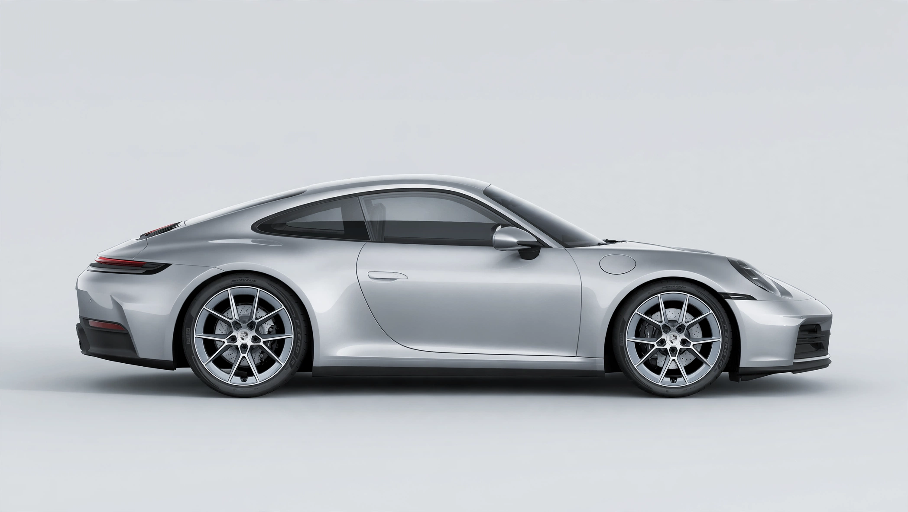

Porsche
From Wikipedia, the free encyclopedia
| Dr. Ing. h.c. F. Porsche AG | |
 | |
| Type | Public (AG) |
|---|---|
| Industry | Automotive |
| Founded | 1931; in Stuttgart, Germany |
| Founder | Ferdinand Porsche |
| Headquarters | Stuttgart, Baden-Württemberg, Germany |
| Key people | Oliver Blume (CEO) |
| Products | Sports cars, SUVs, sedans |
| Parent | Volkswagen Group |
| Website | porsche.com |
Porsche (officially Dr. Ing. h.c. F. Porsche AG) is a German automobile manufacturer specializing in high-performance sports cars, SUVs and sedans, headquartered in Stuttgart, Baden-Württemberg. The company is best known for the 911, its rear-engined sports car introduced in 1964, which has become one of the most recognizable sports cars in the world. Porsche is owned by the Volkswagen Group, while the holding company Porsche SE is the majority shareholder of Volkswagen AG.
History
The company was founded in 1931 by Ferdinand Porsche as an engineering consultancy, Dr. Ing. h. c. F. Porsche GmbH. Among its early commissions was the design of the Volkswagen Beetle, one of the best-selling cars of all time. During the Second World War the firm designed military vehicles, including the Tiger tank prototypes. After the war, Ferdinand's son Ferry Porsche decided to build a sports car of his own: the Porsche 356, released in 1948, was the first car to bear the Porsche name.
The 911 followed in 1964 and established the layout — a rear-mounted flat-six engine — that defines the brand to this day. Porsche expanded into front-engined models such as the 924, 944 and 928 in the 1970s, and returned to profitability in the 1990s under Wendelin Wiedeking with the Boxster and a new-generation 911. The Cayenne SUV, launched in 2002, transformed the company's finances, and the Macan, Panamera and the all-electric Taycan followed. In September 2022 Porsche AG was listed on the Frankfurt Stock Exchange in one of Europe's largest initial public offerings.
Motorsport
Porsche is the most successful marque in sports car racing, with a record number of overall victories at the 24 Hours of Le Mans (19 wins). Its racing cars, from the 917 to the 919 Hybrid, have dominated endurance racing for decades, and the company has also competed in Formula One as an engine supplier.
Models
Current production models include the 911, 718 (Boxster and Cayman), Panamera, Macan, Cayenne and the electric Taycan. The crest, based on the coat of arms of Stuttgart and Württemberg, was introduced in 1952.
See also: Audi, Ferdinand Porsche, Diesel emissions scandal